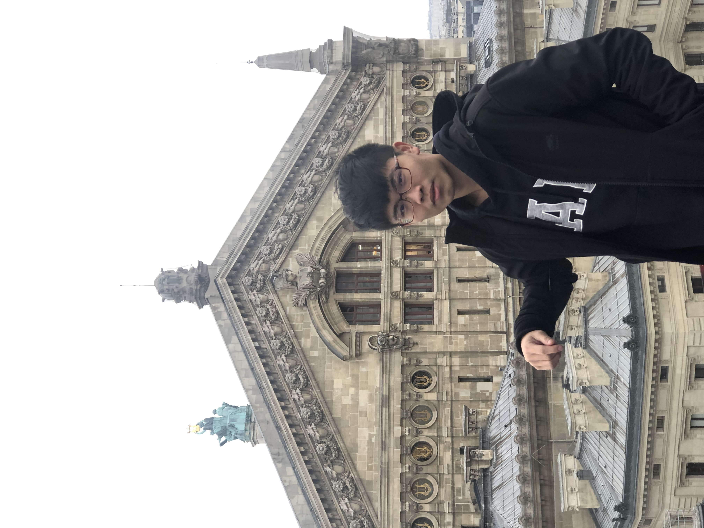

我 的 簡 介


民國八十九年十月五日
|
我 的 簡 介
|
||
|---|---|---|
|  | 姜玉尚 | 生日: 民國八十九年十月五日 |
| 生平 | 出生於雙薪家庭，父母忙於工作所以從小學習如何獨立生活，對於未知的事物充滿好奇心，總喜歡做一些天馬行空的想像，所以在國小時曾受邀去參加 IEYI 得到國小組銀牌，對於數學也有天生的敏銳度，擅長於空間與圖形的變化，在應用邏輯上面也有大大的加分 | |
| 學歷 | 文德國小、青年國中、中正高中、金門大學 資工學系 | |
| 興趣 | 閱讀言情小說、看電影、探索新世界找尋自己不知道的知識 | |
| 個性 | 莽撞、懶散、開朗隨和、平易近人、適應力強 | |
| 參賽經歷 | 榮獲 象棋南區國小組 亞軍、IEYI 國小組 銀牌、奧林匹亞數學競賽 | |
| 未來的展望 | 到國外留學進修，環遊世界體會不同國家的文化特色 | |
圖片來源 by icons8